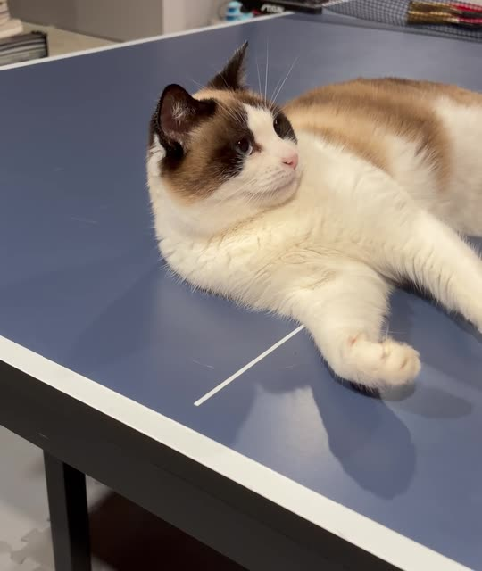
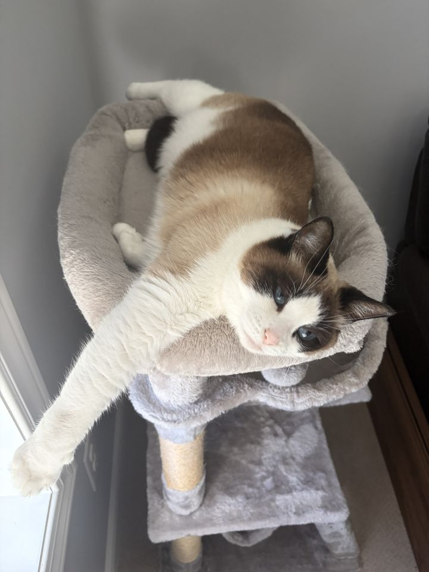
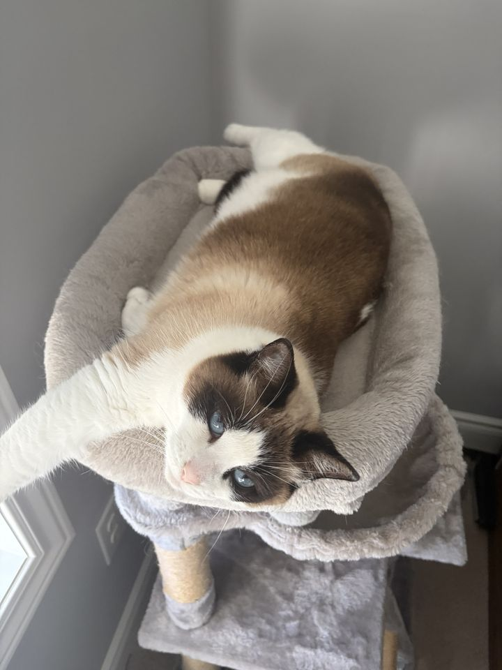
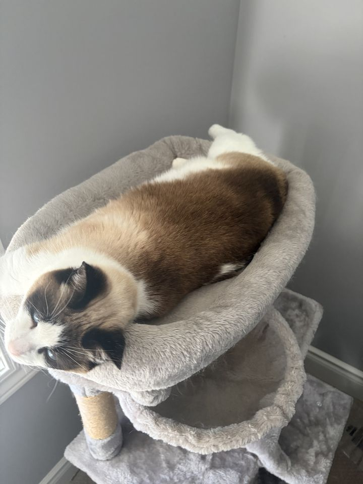
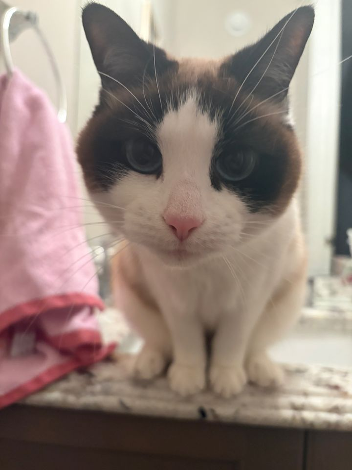
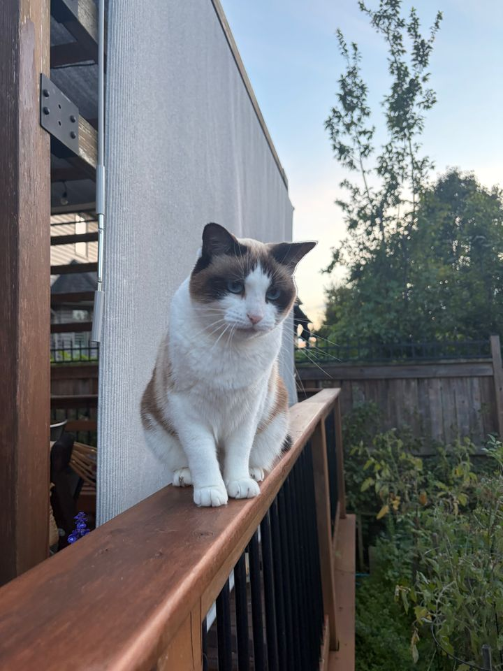
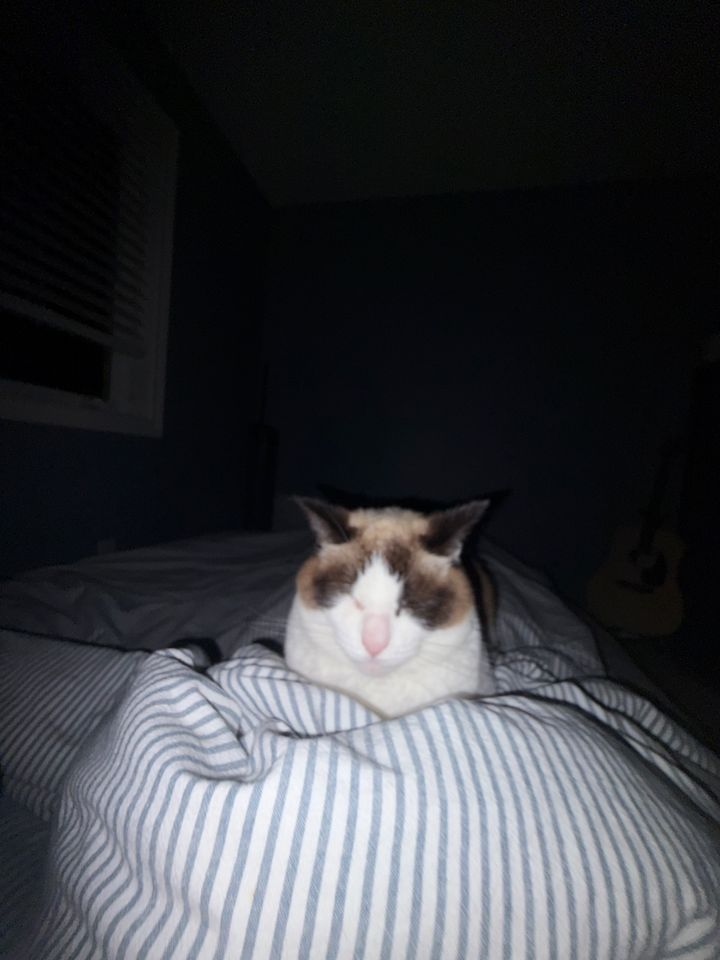
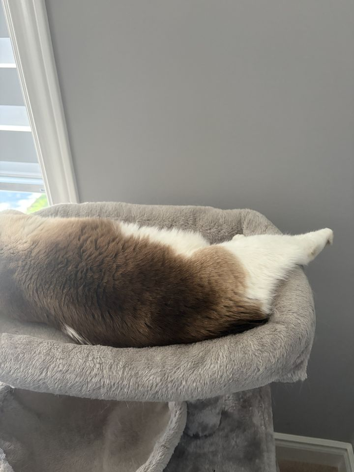

- Name
- Coco
- Position
- Head of Keyboard Testing
- Last seen
- Everywhere. Currently: nowhere. Check the spot you already checked. Twice.
- Loves
- The great outdoors, your side of the bed, and typing asdfghjkkkkkkk into whatever you were working on.
- Skills
- Hide and seek (undefeated). Typing (unreadable).
- Record
- Serial backyard escapee. Forced into early retirement by a fence. Still studying it.
- Hours
- Naps 9 to 5, then 5 to 9.
- Rating
- An amazing cat. ★★★★★
~/taras $ cat coco
Coco.
You found the secret page. It belongs to my cat.
$ coco --status
napping (location unknown)

drag to walk around herHeads or tails?
Flip a Coco. Both sides are a win.
Field notes
Observed in her natural habitat: the top of the cat tree.

nap_01.jpg
nap_02.jpg
nap_03.jpg
nap_04.jpg
nap_05.jpg nap_06.jpg
nap_06.jpg
nap_07.jpg
nap_08.jpg